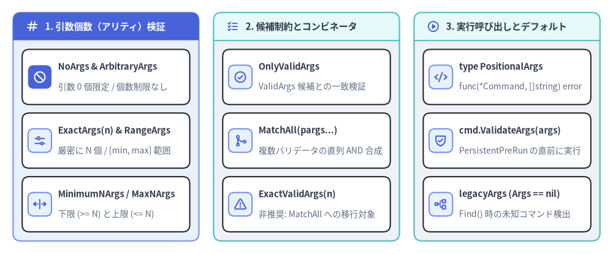
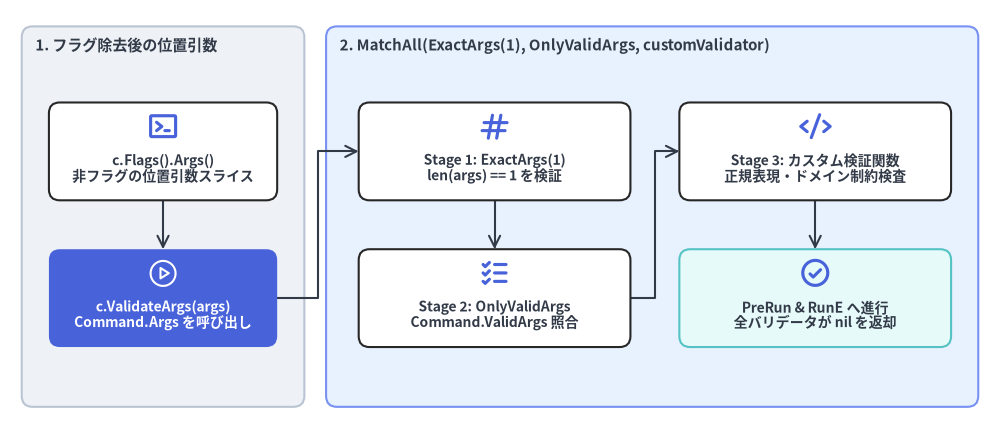

PositionalArgs 型と組み込み位置引数バリデータ
args.go（L22-L132）では、位置引数検証関数の型である cobra.PositionalArgs、9 つのエクスポート済みバリデータ関数・コンビネータ、Command.Args == nil 時のデフォルト挙動を担う legacyArgs、および (*Command).ValidateArgs(args []string) error（command.go:L1172-L1177）が定義されています。

Source Code
from drawlib.canvas import save, setup
from drawlib.icons import phosphor
from drawlib.smartarts import CardList, Panel
from drawlib.styles import Colors, Styles
setup(width=188, height=78)
_ = Colors
col_specs = [
(
4.0,
"1. 引数個数（アリティ）検証",
Styles.PrimaryNeutral,
Styles.PrimaryFlat,
Styles.WhiteBold.patch(text_size=11.0),
phosphor.hash,
Styles.WhiteBold,
[
("NoArgs & ArbitraryArgs", "引数 0 個限定 / 個数制限なし", phosphor.prohibit, True),
("ExactArgs(n) & RangeArgs", "厳密に N 個 / [min, max] 範囲", phosphor.sliders_horizontal, False),
("MinimumNArgs / MaxNArgs", "下限 (>= N) と上限 (<= N)", phosphor.arrows_out_line_horizontal, False),
],
),
(
65.5,
"2. 候補制約とコンビネータ",
Styles.Neutral,
Styles.SecondaryNeutral,
Styles.DarkBold.patch(text_size=11.0),
phosphor.list_checks,
Styles.PrimaryBold,
[
("OnlyValidArgs", "ValidArgs 候補との一致検証", phosphor.check_circle, False),
("MatchAll(pargs...)", "複数バリデータの直列 AND 合成", phosphor.git_merge, False),
("ExactValidArgs(n)", "非推奨: MatchAll への移行対象", phosphor.warning, False),
],
),
(
127.0,
"3. 実行呼び出しとデフォルト",
Styles.Neutral,
Styles.SecondaryNeutral,
Styles.DarkBold.patch(text_size=11.0),
phosphor.play_circle,
Styles.PrimaryBold,
[
("type PositionalArgs", "func(*Command, []string) error", phosphor.code, False),
("cmd.ValidateArgs(args)", "PersistentPreRun の直前に実行", phosphor.shield_check, False),
("legacyArgs (Args == nil)", "Find() 時の未知コマンド検出", phosphor.tree_structure, False),
],
),
]
for x0, title, body_style, hdr_style, hdr_text_style, hdr_icon, hdr_icon_style, items in col_specs:
panel = Panel(
title,
"",
style=body_style,
header_style=hdr_style,
text_style=hdr_text_style,
icon=hdr_icon,
icon_style=hdr_icon_style,
header_variant="filled",
header_height=8.5,
)
panel.draw((x0, 4.0), width=57.0, height=70.0, align="bottom_left")
inner_xy, inner_w, inner_h = panel.get_content_box(
(x0, 4.0),
width=57.0,
height=70.0,
padding=(2.8, 2.8),
align="bottom_left",
)
cards = CardList(
style=Styles.White,
text_style=Styles.DarkBold.patch(text_size=10.5),
description_style=Styles.Muted.patch(text_size=10.0),
badge_shape="rounded_rect",
badge_style=Styles.PrimaryNeutral,
icon_style=Styles.PrimaryBold,
direction="vertical",
spacing=2.6,
)
for mod_name, mod_desc, mod_icon, is_focal in items:
if is_focal:
cards.add(
mod_name,
mod_desc,
icon=mod_icon,
badge_style=Styles.PrimaryFlat,
icon_style=Styles.WhiteBold,
)
else:
cards.add(mod_name, mod_desc, icon=mod_icon)
cards.draw(inner_xy, width=inner_w, height=inner_h, align="bottom_left")
save()
typecobra.PositionalArgs & method (*Command).ValidateArgs#
PositionalArgs は Command.Args フィールドに設定する位置引数バリデータの関数型です（args.go:L22, command.go:L93, L1172-L1177）。
type PositionalArgs func(cmd *Command, args []string) error
func (c *Command) ValidateArgs(args []string) error {
if c.Args == nil {
return ArbitraryArgs(c, args)
}
return c.Args(c, args)
}
| シンボル | シグネチャ | 説明 |
|---|---|---|
PositionalArgs |
type PositionalArgs func(cmd *Command, args []string) error |
実行対象の *Command と、フラグ解析後の位置引数スライス（c.Flags().Args()、または DisableFlagParsing == true の場合は生引数スライス）を受け取る関数型です。非 nil の error を返すと、すべての *Run フックを実行せずに cmd.execute() を中断します。 |
(*Command).ValidateArgs |
func (c *Command) ValidateArgs(args []string) error |
cmd.execute() 内で c.preRun()（OnInitialize）の直後、かつ PersistentPreRun[E] の直前に呼び出されます。c.Args != nil なら c.Args(c, args) を実行し、c.Args == nil なら ArbitraryArgs(c, args)（常に nil）を返します。 |
func位置引数バリデータ・コンビネータ全一覧 (args.go)#
args.go のエクスポート関数は以下の 2 種類に分類されます。
- 直接代入する
PositionalArgs関数（NoArgs,OnlyValidArgs,ArbitraryArgs）：括弧をつけずにArgs: cobra.NoArgsのように指定します。 - クロージャを返す高階ファクトリ関数（
MinimumNArgs,MaximumNArgs,ExactArgs,RangeArgs,MatchAll,ExactValidArgs）：引数を渡してArgs: cobra.ExactArgs(2)のように呼び出します。
// 直接代入する PositionalArgs 関数
func NoArgs(cmd *Command, args []string) error
func OnlyValidArgs(cmd *Command, args []string) error
func ArbitraryArgs(cmd *Command, args []string) error
// PositionalArgs クロージャを生成する高階ファクトリ・コンビネータ関数
func MinimumNArgs(n int) PositionalArgs
func MaximumNArgs(n int) PositionalArgs
func ExactArgs(n int) PositionalArgs
func RangeArgs(min int, max int) PositionalArgs
func MatchAll(pargs ...PositionalArgs) PositionalArgs
func ExactValidArgs(n int) PositionalArgs // Deprecated: use MatchAll(ExactArgs(n), OnlyValidArgs)
// Command.Args == nil 時に Find() 内で適用されるデフォルト検証関数
func legacyArgs(cmd *Command, args []string) error
| バリデータ / ファクトリ | 検証される条件 | 検証失敗時に返される正確なエラー文字列 (args.go) |
|---|---|---|
cobra.NoArgs |
len(args) == 0 |
fmt.Errorf("unknown command %q for %q", args[0], cmd.CommandPath()) |
cobra.OnlyValidArgs |
len(cmd.ValidArgs) > 0 の場合、args の各要素が strings.SplitN(validArg, "\t", 2)[0]（\t 以降の説明文を除去した文字列）のいずれかと一致すること |
fmt.Errorf("invalid argument %q for %q%s", v, cmd.CommandPath(), cmd.findSuggestions(args[0])) |
cobra.ArbitraryArgs |
常に成功（無制限） | エラーを返しません（常に nil）。 |
cobra.MinimumNArgs(n int) |
len(args) >= n |
fmt.Errorf("requires at least %d arg(s), only received %d", n, len(args)) |
cobra.MaximumNArgs(n int) |
len(args) <= n |
fmt.Errorf("accepts at most %d arg(s), received %d", n, len(args)) |
cobra.ExactArgs(n int) |
len(args) == n |
fmt.Errorf("accepts %d arg(s), received %d", n, len(args)) |
cobra.RangeArgs(min, max int) |
len(args) >= min && len(args) <= max |
fmt.Errorf("accepts between %d and %d arg(s), received %d", min, max, len(args)) |
cobra.MatchAll(pargs ...PositionalArgs) |
左から順に各 parg(cmd, args) を直列評価 |
最初に非 nil となった error を即座に返します（短絡評価）。すべて通過すれば nil を返します。 |
cobra.ExactValidArgs(n int) |
非推奨 (Deprecated): MatchAll(ExactArgs(n), OnlyValidArgs) と等価 |
len(args) != n なら ExactArgs(n) のエラー、個数一致時は OnlyValidArgs のエラーを返します。 |
legacyArgs (デフォルト: Args == nil 時) |
Find()（command.go:L775）で評価：• !cmd.HasSubCommands() -> nil• !cmd.HasParent() && len(args) > 0 -> エラー• それ以外（サブコマンド） -> nil |
fmt.Errorf("unknown command %q for %q%s", args[0], cmd.CommandPath(), cmd.findSuggestions(args[0])) |

Source Code
from drawlib.canvas import save, setup
from drawlib.diagrams.architecture import ArchitectureDiagram, Node, NodeGroup, PhosphorIcon
from drawlib.styles import Colors, Styles
setup(width=184, height=80)
_ = Colors
d = ArchitectureDiagram(
node_style=Styles.PrimaryBold,
node_text_style=Styles.DarkBold.patch(text_size=10.0),
edge_style=Styles.DarkBold.patch(line_width=1.5),
edge_text_style=Styles.Dark.patch(text_size=9.8),
node_card_style=Styles.White,
)
input_grp = d.add(
NodeGroup(
"1. フラグ除去後の位置引数",
width=52,
height=70,
style=Styles.Neutral.patch(shape_r=2.0),
text_style=Styles.DarkBold.patch(text_size=10.8, halign="left", valign="top"),
),
xy=(4.0, 5.0),
)
flags_args = input_grp.add(
Node(
"c.Flags().Args()\n非フラグの位置引数スライス",
icon=PhosphorIcon.TERMINAL_WINDOW,
icon_size=6.0,
width=42,
height=18,
card_style=Styles.White.patch(shape_r=2.0),
),
xy=(26.0, 47.0),
)
val_call = input_grp.add(
Node(
"c.ValidateArgs(args)\nCommand.Args を呼び出し",
icon=PhosphorIcon.PLAY_CIRCLE,
icon_size=6.0,
width=42,
height=18,
style=Styles.White,
text_style=Styles.WhiteBold.patch(text_size=10.0),
card_style=Styles.PrimaryFlat.patch(shape_r=2.0),
),
xy=(26.0, 20.0),
)
match_grp = d.add(
NodeGroup(
"2. MatchAll(ExactArgs(1), OnlyValidArgs, customValidator)",
width=120,
height=70,
style=Styles.PrimaryNeutral.patch(shape_r=2.0),
text_style=Styles.DarkBold.patch(text_size=10.8, halign="left", valign="top"),
),
xy=(60.0, 5.0),
)
step1 = match_grp.add(
Node(
"Stage 1: ExactArgs(1)\nlen(args) == 1 を検証",
icon=PhosphorIcon.HASH,
icon_size=6.0,
width=50,
height=18,
card_style=Styles.White.patch(shape_r=2.0),
),
xy=(31.0, 47.0),
)
step2 = match_grp.add(
Node(
"Stage 2: OnlyValidArgs\nCommand.ValidArgs 照合",
icon=PhosphorIcon.LIST_CHECKS,
icon_size=6.0,
width=50,
height=18,
card_style=Styles.White.patch(shape_r=2.0),
),
xy=(31.0, 20.0),
)
step3 = match_grp.add(
Node(
"Stage 3: カスタム検証関数\n正規表現・ドメイン制約検査",
icon=PhosphorIcon.CODE,
icon_size=6.0,
width=50,
height=18,
card_style=Styles.White.patch(shape_r=2.0),
),
xy=(90.0, 47.0),
)
ok_node = match_grp.add(
Node(
"PreRun & RunE へ進行\n全バリデータが nil を返却",
icon=PhosphorIcon.CHECK_CIRCLE,
icon_size=6.0,
width=50,
height=18,
card_style=Styles.SecondaryNeutral.patch(shape_r=2.0),
),
xy=(90.0, 20.0),
)
d.connect(flags_args, val_call)
d.connect(val_call, step1)
d.connect(step1, step2)
d.connect(step2, step3)
d.connect(step3, ok_node)
d.draw((0.0, 0.0))
save()
func詳細仕様と実装上の注意点#
1. OnlyValidArgs におけるタブ文字（\t）説明文の自動除去 (args.go:L51-L66)#
Command.ValidArgs（[]Completion）には CompletionWithDesc("staging", "Staging cluster") によって "staging\tStaging cluster" のようにタブ区切りの説明文を含めることができます。OnlyValidArgs は検証時に strings.SplitN(v, "\t", 2)[0] でタブ以降の文字列を自動的に切り落としてから args と比較するため、説明付き補完候補とバリデータをそのまま併用できます。
validArgs := make([]string, 0, len(cmd.ValidArgs))
for _, v := range cmd.ValidArgs {
validArgs = append(validArgs, strings.SplitN(v, "\t", 2)[0])
}
2. Command.Args == nil 時の legacyArgs の挙動 (args.go:L24-L39)#
Command.Args を未設定（nil）のままにした場合：
- サブコマンドを持つルートコマンド:
Find()がlegacyArgsを呼び出し、一致しない第 1 引数を"unknown command %q for %q"（＋レーベンシュタイン距離によるタイポ提案）としてエラーにします。 - サブコマンド（または子を持たないルートコマンド）:
legacyArgsとValidateArgsの両方がnilを返すため、デフォルトでは任意個数の位置引数を受け入れます。
[!TIP] 位置引数を取らないサブコマンドのベストプラクティス: 位置引数を必要としないサブコマンドには明示的に
Args: cobra.NoArgsを設定してください。これにより、余分な引数の誤入力やハイフン抜けのフラグ（例：--forceをforceと誤記）を実行前に即座に検知できます。
使用例：cobra.MatchAll による組み込みバリデータとカスタム関数の合成#
package main
import (
"fmt"
"strings"
"github.com/spf13/cobra"
)
var promoteCmd = &cobra.Command{
Use: "promote <environment> <version>",
Short: "Promote a release artifact to a target environment",
ValidArgs: []cobra.Completion{
cobra.CompletionWithDesc("staging", "Pre-production staging environment"),
cobra.CompletionWithDesc("prod", "Production environment"),
},
Args: cobra.MatchAll(
cobra.ExactArgs(2),
func(cmd *cobra.Command, args []string) error {
// 第 1 引数のみ ValidArgs と照合
if err := cobra.OnlyValidArgs(cmd, args[:1]); err != nil {
return err
}
// 第 2 引数のフォーマット（v 始まりの SemVer）を検証
if !strings.HasPrefix(args[1], "v") {
return fmt.Errorf("version %q must start with 'v' (e.g. v1.10.2)", args[1])
}
return nil
},
),
RunE: func(cmd *cobra.Command, args []string) error {
cmd.Printf("Promoting %s to %s\n", args[1], args[0])
return nil
},
}